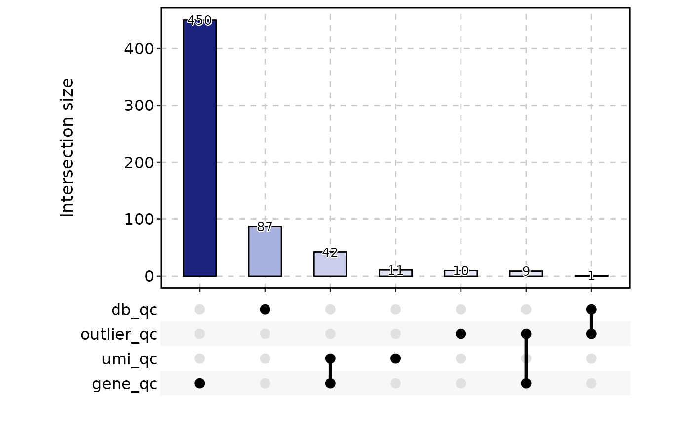
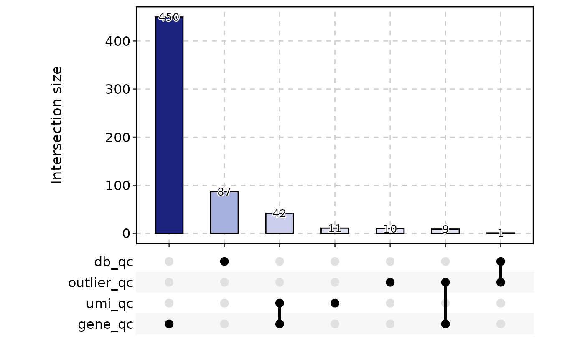

This function handles multiple quality control methods for single-cell RNA-seq data.
Usage
RunCellQC(
srt,
assay = "RNA",
split.by = NULL,
return_filtered = FALSE,
qc_metrics = c("doublets", "outlier", "umi", "gene", "mito", "ribo", "ribo_mito_ratio",
"species"),
db_method = "scDblFinder",
db_rate = NULL,
db_coefficient = 0.01,
outlier_threshold = c("log10_nCount:lower:2.5", "log10_nCount:higher:5",
"log10_nFeature:lower:2.5", "log10_nFeature:higher:5", "featurecount_dist:lower:2.5"),
outlier_n = 1,
UMI_threshold = 3000,
gene_threshold = 1000,
mito_threshold = 20,
mito_pattern = c("MT-", "Mt-", "mt-"),
mito_gene = NULL,
ribo_threshold = 50,
ribo_pattern = c("RP[SL]\\d+\\w{0,1}\\d*$", "Rp[sl]\\d+\\w{0,1}\\d*$",
"rp[sl]\\d+\\w{0,1}\\d*$"),
ribo_gene = NULL,
ribo_mito_ratio_range = c(1, Inf),
species = NULL,
species_gene_prefix = NULL,
species_percent = 95,
seed = 11
)Arguments
- srt
A Seurat object.
- assay
The name of the assay to be used for doublet-calling. Default is
"RNA".- split.by
Name of the sample variable to split the Seurat object. Default is
NULL.- return_filtered
Logical indicating whether to return a cell-filtered Seurat object. Default is
FALSE.- qc_metrics
A character vector specifying the quality control metrics to be applied. Default is
c("doublets", "outlier", "umi", "gene", "mito", "ribo", "ribo_mito_ratio", "species").- db_method
Method used for doublet-calling. Can be one of
"scDblFinder","Scrublet","DoubletDetection","scds_cxds","scds_bcds","scds_hybrid".- db_rate
The expected doublet rate. Default is calculated as
ncol(srt) / 1000 * 0.01.- db_coefficient
The coefficient used to calculate the doublet rate. Default is
0.01. Doublet rate is calculated asncol(srt) / 1000 * db_coefficient.- outlier_threshold
A character vector specifying the outlier threshold. Default is
c("log10_nCount:lower:2.5", "log10_nCount:higher:5", "log10_nFeature:lower:2.5", "log10_nFeature:higher:5", "featurecount_dist:lower:2.5"). See scuttle::isOutlier.- outlier_n
Minimum number of outlier metrics that meet the conditions for determining outlier cells. Default is
1.- UMI_threshold
UMI number threshold. Cells that exceed this threshold will be considered as kept. Default is
3000.- gene_threshold
Gene number threshold. Cells that exceed this threshold will be considered as kept. Default is
1000.- mito_threshold
Percentage of UMI counts of mitochondrial genes. Cells that exceed this threshold will be considered as discarded. Default is
20.- mito_pattern
Regex patterns to match the mitochondrial genes. Default is
c("MT-", "Mt-", "mt-").- mito_gene
A defined mitochondrial genes. If features provided, will ignore the
mito_patternmatching. Default isNULL.- ribo_threshold
Percentage of UMI counts of ribosomal genes. Cells that exceed this threshold will be considered as discarded. Default is
50.- ribo_pattern
Regex patterns to match the ribosomal genes. Default is
c("RP[SL]\\d+\\w{0,1}\\d*$", "Rp[sl]\\d+\\w{0,1}\\d*$", "rp[sl]\\d+\\w{0,1}\\d*$").- ribo_gene
A defined ribosomal genes. If features provided, will ignore the
ribo_patternmatching. Default isNULL.- ribo_mito_ratio_range
A numeric vector specifying the range of ribosomal/mitochondrial gene expression ratios for ribo_mito_ratio outlier cells. Default is
c(1, Inf).- species
Species used as the suffix of the QC metrics. The first is the species of interest. Default is
NULL.- species_gene_prefix
Species gene prefix used to calculate QC metrics for each species. Default is
NULL.- species_percent
Percentage of UMI counts of the first species. Cells that exceed this threshold will be considered as kept. Default is
95.- seed
Set a random seed. Default is
11.
Examples
data(pancreas_sub)
pancreas_sub <- standard_scop(pancreas_sub)
#> StandardPC_ 1
#> Positive: Aplp1, Cpe, Gnas, Fam183b, Map1b, Hmgn3, Pcsk1n, Chga, Tuba1a, Bex2
#> Syt13, Isl1, 1700086L19Rik, Pax6, Chgb, Scgn, Rbp4, Scg3, Gch1, Camk2n1
#> Cryba2, Pcsk2, Pyy, Tspan7, Mafb, Hist3h2ba, Dbpht2, Abcc8, Rap1b, Slc38a5
#> Negative: Spp1, Anxa2, Sparc, Dbi, 1700011H14Rik, Wfdc2, Gsta3, Adamts1, Clu, Mgst1
#> Bicc1, Ldha, Vim, Cldn3, Cyr61, Rps2, Mt1, Ptn, Phgdh, Nudt19
#> Smtnl2, Smco4, Habp2, Mt2, Col18a1, Rpl12, Galk1, Cldn10, Acot1, Ccnd1
#> StandardPC_ 2
#> Positive: Rbp4, Tagln2, Tuba1b, Fkbp2, Pyy, Pcsk2, Iapp, Tmem27, Meis2, Tubb4b
#> Pcsk1n, Dbpht2, Rap1b, Dynll1, Tubb2a, Sdf2l1, Scgn, 1700086L19Rik, Scg2, Abcc8
#> Atp1b1, Hspa5, Fam183b, Papss2, Slc38a5, Scg3, Mageh1, Tspan7, Ppp1r1a, Ociad2
#> Negative: Neurog3, Btbd17, Gadd45a, Ppp1r14a, Neurod2, Sox4, Smarcd2, Mdk, Pax4, Btg2
#> Sult2b1, Hes6, Grasp, Igfbpl1, Gpx2, Cbfa2t3, Foxa3, Shf, Mfng, Tmsb4x
#> Amotl2, Gdpd1, Cdc14b, Epb42, Rcor2, Cotl1, Upk3bl, Rbfox3, Cldn6, Cer1
#> StandardPC_ 3
#> Positive: Nusap1, Top2a, Birc5, Aurkb, Cdca8, Pbk, Mki67, Tpx2, Plk1, Ccnb1
#> 2810417H13Rik, Incenp, Cenpf, Ccna2, Prc1, Racgap1, Cdk1, Aurka, Cdca3, Hmmr
#> Spc24, Kif23, Sgol1, Cenpe, Cdc20, Hist1h1b, Cdca2, Mxd3, Kif22, Ska1
#> Negative: Anxa5, Pdzk1ip1, Acot1, Tpm1, Anxa2, Dcdc2a, Capg, Sparc, Ttr, Pamr1
#> Clu, Cxcl12, Ndrg2, Hnf1aos1, Gas6, Gsta3, Krt18, Ces1d, Atp1b1, Muc1
#> Hhex, Acadm, Spp1, Enpp2, Bcl2l14, Sat1, Smtnl2, 1700011H14Rik, Tgm2, Fam159a
#> StandardPC_ 4
#> Positive: Glud1, Tm4sf4, Akr1c19, Cldn4, Runx1t1, Fev, Pou3f4, Gm43861, Pgrmc1, Arx
#> Cd200, Lrpprc, Hmgn3, Ppp1r14c, Pam, Etv1, Tsc22d1, Slc25a5, Akap17b, Pgf
#> Fam43a, Emb, Jun, Krt8, Dnajc12, Mid1ip1, Ids, Rgs17, Uchl1, Alcam
#> Negative: Ins2, Ins1, Ppp1r1a, Nnat, Calr, Sytl4, Sdf2l1, Iapp, Pdia6, Mapt
#> G6pc2, C2cd4b, Npy, Gng12, P2ry1, Ero1lb, Adra2a, Papss2, Arhgap36, Fam151a
#> Dlk1, Creld2, Gip, Tmem215, Gm27033, Cntfr, Prss53, C2cd4a, Lyve1, Ociad2
#> StandardPC_ 5
#> Positive: Pdx1, Nkx6-1, Npepl1, Cldn4, Cryba2, Fev, Jun, Chgb, Gng12, Adra2a
#> Mnx1, Sytl4, Pdk3, Gm27033, Nnat, Chga, Ins2, 1110012L19Rik, Enho, Krt7
#> Mlxipl, Tmsb10, Flrt1, Pax4, Tubb3, Prrg2, Gars, Frzb, BC023829, Gm2694
#> Negative: Irx2, Irx1, Gcg, Ctxn2, Tmem27, Ctsz, Tmsb15l, Nap1l5, Pou6f2, Gria2
#> Ghrl, Peg10, Smarca1, Arx, Lrpap1, Rgs4, Ttr, Gast, Tmsb15b2, Serpina1b
#> Slc16a10, Wnk3, Ly6e, Auts2, Sct, Arg1, Dusp10, Sphkap, Dock11, Edn3
pancreas_sub <- RunCellQC(pancreas_sub)
#>
#> → Will install 66 packages.
#> → Will download 4 CRAN packages (1.71 MB), cached: 62 (0 B).
#> + AnnotationDbi 1.72.0 [bld]
#> + AnnotationFilter 1.34.0 [bld]
#> + AnnotationHub 4.0.0 [bld][cmp]
#> + BiocBaseUtils 1.12.0 [bld]
#> + BiocFileCache 3.0.0 [bld]
#> + BiocIO 1.20.0 [bld]
#> + BiocSingular 1.26.1 [bld][cmp]
#> + BiocVersion 3.22.0 [bld]
#> + Biostrings 2.78.0 [bld][cmp]
#> + Cairo 1.7-0 + ✔ libcairo2-dev
#> + ClusterR 1.3.5 [bld][cmp][dl] (981.49 kB)
#> + ExperimentHub 3.0.0 [bld]
#> + GenomeInfoDb 1.46.2 [bld]
#> + GenomicAlignments 1.46.0 [bld][cmp]
#> + GenomicFeatures 1.62.0 [bld]
#> + HDF5Array 1.38.0 [bld] + ✔ make
#> + KEGGREST 1.50.0 [bld]
#> + ProtGenerics 1.42.0 [bld]
#> + RCurl 1.98-1.17 + ✔ make, ✔ libcurl4-openssl-dev
#> + RSQLite 2.4.5
#> + RcppML 0.3.7 [bld][cmp][dl] (45.88 kB)
#> + Rhdf5lib 1.32.0 [bld][cmp] + ✔ make
#> + Rhtslib 3.6.0 [bld][cmp] + ✔ libbz2-dev, ✔ libcurl4-openssl-dev, ✔ liblzma-dev
#> + Rsamtools 2.26.0 [bld][cmp] + ✔ make
#> + ScaledMatrix 1.18.0 [bld]
#> + UCSC.utils 1.6.1 [bld]
#> + V8 8.0.1 [bld][cmp][dl] (670.95 kB) + ✖ libnode-dev
#> + XML 3.99-0.20 + ✔ libxml2-dev
#> + alabaster.base 1.10.0 [bld][cmp] + ✔ make
#> + alabaster.matrix 1.10.0 [bld][cmp]
#> + alabaster.ranges 1.10.0 [bld]
#> + alabaster.sce 1.10.0 [bld]
#> + alabaster.schemas 1.10.0 [bld]
#> + alabaster.se 1.10.0 [bld]
#> + beachmat 2.26.0 [bld][cmp]
#> + beeswarm 0.4.0
#> + benchmarkme 1.0.8
#> + benchmarkmeData 1.0.4
#> + bluster 1.20.0 [bld][cmp]
#> + cigarillo 1.0.0 [bld][cmp]
#> + edgeR 4.8.1 [bld][cmp]
#> + ensembldb 2.34.0 [bld]
#> + filelock 1.0.3
#> + ggbeeswarm 0.7.3
#> + ggrastr 1.0.2
#> + gmp 0.7-5 + ✖ libgmp3-dev
#> + gypsum 1.6.0 [bld]
#> + h5mread 1.2.1 [bld][cmp]
#> + httr2 1.2.2
#> + jsonvalidate 1.5.0
#> + mbkmeans 1.26.0 [bld][cmp]
#> + metapod 1.18.0 [bld][cmp]
#> + pheatmap 1.0.13
#> + restfulr 0.0.16 [bld][cmp][dl] (14.98 kB)
#> + rhdf5 2.54.1 [bld][cmp] + ✔ make
#> + rhdf5filters 1.22.0 [bld][cmp] + ✔ make
#> + rsvd 1.0.5
#> + rtracklayer 1.70.0 [bld][cmp]
#> + scDblFinder 1.24.0 [bld]
#> + scRNAseq 2.24.0 [bld]
#> + scater 1.38.0 [bld]
#> + scran 1.38.0 [bld][cmp]
#> + scuttle 1.20.0 [bld][cmp]
#> + vipor 0.4.7
#> + viridis 0.6.5
#> + xgboost 3.1.2.1 + ✔ make
#> → Will install 2 system packages:
#> + libgmp3-dev - gmp
#> + libnode-dev - V8
#> ℹ Getting 4 pkgs (1.71 MB), 62 cached
#> ✔ Got alabaster.ranges 1.10.0 (source) (232.01 kB)
#> ✔ Got alabaster.sce 1.10.0 (source) (226.14 kB)
#> ✔ Got alabaster.se 1.10.0 (source) (231.15 kB)
#> ✔ Got alabaster.schemas 1.10.0 (source) (247.50 kB)
#> ✔ Got BiocVersion 3.22.0 (source) (1.11 kB)
#> ✔ Got alabaster.matrix 1.10.0 (source) (282.83 kB)
#> ✔ Got alabaster.base 1.10.0 (source) (342.94 kB)
#> ✔ Got filelock 1.0.3 (x86_64-pc-linux-gnu-ubuntu-24.04) (24.70 kB)
#> ✔ Got Cairo 1.7-0 (x86_64-pc-linux-gnu-ubuntu-24.04) (93.28 kB)
#> ✔ Got AnnotationFilter 1.34.0 (source) (325.42 kB)
#> ✔ Got beachmat 2.26.0 (source) (383.08 kB)
#> ✔ Got benchmarkme 1.0.8 (x86_64-pc-linux-gnu-ubuntu-24.04) (122.90 kB)
#> ✔ Got metapod 1.18.0 (source) (333.89 kB)
#> ✔ Got benchmarkmeData 1.0.4 (x86_64-pc-linux-gnu-ubuntu-24.04) (282.00 kB)
#> ✔ Got V8 8.0.1 (source) (668.96 kB)
#> ✔ Got gmp 0.7-5 (x86_64-pc-linux-gnu-ubuntu-24.04) (330.19 kB)
#> ✔ Got scuttle 1.20.0 (source) (1.03 MB)
#> ✔ Got Rsamtools 2.26.0 (source) (1.92 MB)
#> ✔ Got GenomicAlignments 1.46.0 (source) (2.26 MB)
#> ✔ Got scDblFinder 1.24.0 (source) (2.25 MB)
#> ✔ Got ClusterR 1.3.5 (source) (982.35 kB)
#> ✔ Got h5mread 1.2.1 (source) (2.48 MB)
#> ✔ Got scRNAseq 2.24.0 (source) (311.65 kB)
#> ✔ Got ggbeeswarm 0.7.3 (x86_64-pc-linux-gnu-ubuntu-24.04) (1.77 MB)
#> ✔ Got RcppML 0.3.7 (source) (45.00 kB)
#> ✔ Got jsonvalidate 1.5.0 (x86_64-pc-linux-gnu-ubuntu-24.04) (177.69 kB)
#> ✔ Got BiocSingular 1.26.1 (source) (618.28 kB)
#> ✔ Got ggrastr 1.0.2 (x86_64-pc-linux-gnu-ubuntu-24.04) (2.68 MB)
#> ✔ Got AnnotationDbi 1.72.0 (source) (4.38 MB)
#> ✔ Got restfulr 0.0.16 (source) (15.03 kB)
#> ✔ Got beeswarm 0.4.0 (x86_64-pc-linux-gnu-ubuntu-24.04) (78.13 kB)
#> ✔ Got gypsum 1.6.0 (source) (284.67 kB)
#> ✔ Got KEGGREST 1.50.0 (source) (239.73 kB)
#> ✔ Got pheatmap 1.0.13 (x86_64-pc-linux-gnu-ubuntu-24.04) (78.32 kB)
#> ✔ Got vipor 0.4.7 (x86_64-pc-linux-gnu-ubuntu-24.04) (4.58 MB)
#> ✔ Got XML 3.99-0.20 (x86_64-pc-linux-gnu-ubuntu-24.04) (1.83 MB)
#> ✔ Got RSQLite 2.4.5 (x86_64-pc-linux-gnu-ubuntu-24.04) (1.35 MB)
#> ✔ Got rtracklayer 1.70.0 (source) (4.10 MB)
#> ✔ Got scran 1.38.0 (source) (1.83 MB)
#> ✔ Got scater 1.38.0 (source) (4.57 MB)
#> ✔ Got ensembldb 2.34.0 (source) (3.54 MB)
#> ✔ Got ExperimentHub 3.0.0 (source) (503.09 kB)
#> ✔ Got viridis 0.6.5 (x86_64-pc-linux-gnu-ubuntu-24.04) (3.01 MB)
#> ✔ Got mbkmeans 1.26.0 (source) (300.82 kB)
#> ✔ Got BiocIO 1.20.0 (source) (232.37 kB)
#> ✔ Got cigarillo 1.0.0 (source) (258.57 kB)
#> ✔ Got ProtGenerics 1.42.0 (source) (11.78 kB)
#> ✔ Got AnnotationHub 4.0.0 (source) (1.00 MB)
#> ✔ Got RCurl 1.98-1.17 (x86_64-pc-linux-gnu-ubuntu-24.04) (1.07 MB)
#> ✔ Got BiocBaseUtils 1.12.0 (source) (232.56 kB)
#> ✔ Got ScaledMatrix 1.18.0 (source) (314.08 kB)
#> ✔ Got Rhtslib 3.6.0 (source) (5.18 MB)
#> ✔ Got bluster 1.20.0 (source) (3.26 MB)
#> ✔ Got rhdf5filters 1.22.0 (source) (1.19 MB)
#> ✔ Got GenomicFeatures 1.62.0 (source) (574.45 kB)
#> ✔ Got rsvd 1.0.5 (x86_64-pc-linux-gnu-ubuntu-24.04) (3.59 MB)
#> ✔ Got BiocFileCache 3.0.0 (source) (744.19 kB)
#> ✔ Got Rhdf5lib 1.32.0 (source) (12.07 MB)
#> ✔ Got HDF5Array 1.38.0 (source) (8.36 MB)
#> ✔ Got Biostrings 2.78.0 (source) (12.82 MB)
#> ℹ Installing system requirements
#> ℹ Executing `sudo sh -c apt-get -y update`
#> Get:1 file:/etc/apt/apt-mirrors.txt Mirrorlist [144 B]
#> Hit:6 https://packages.microsoft.com/repos/azure-cli noble InRelease
#> Hit:7 https://packages.microsoft.com/ubuntu/24.04/prod noble InRelease
#> Hit:2 http://azure.archive.ubuntu.com/ubuntu noble InRelease
#> Hit:3 http://azure.archive.ubuntu.com/ubuntu noble-updates InRelease
#> Hit:4 http://azure.archive.ubuntu.com/ubuntu noble-backports InRelease
#> Hit:5 http://azure.archive.ubuntu.com/ubuntu noble-security InRelease
#> Reading package lists...
#> ℹ Executing `sudo sh -c apt-get -y install libcairo2-dev libgmp3-dev make libcurl4-openssl-dev libnode-dev libxml2-dev libbz2-dev liblzma-dev perl pandoc libssl-dev libglpk-dev libpng-dev libfreetype6-dev libjpeg-dev libtiff-dev libwebp-dev libicu-dev libfontconfig1-dev libfribidi-dev libharfbuzz-dev`
#> Reading package lists...
#> Building dependency tree...
#> Reading state information...
#> libcairo2-dev is already the newest version (1.18.0-3build1).
#> make is already the newest version (4.3-4.1build2).
#> libcurl4-openssl-dev is already the newest version (8.5.0-2ubuntu10.6).
#> libxml2-dev is already the newest version (2.9.14+dfsg-1.3ubuntu3.6).
#> libbz2-dev is already the newest version (1.0.8-5.1build0.1).
#> liblzma-dev is already the newest version (5.6.1+really5.4.5-1ubuntu0.2).
#> perl is already the newest version (5.38.2-3.2ubuntu0.2).
#> pandoc is already the newest version (3.1.3+ds-2).
#> libssl-dev is already the newest version (3.0.13-0ubuntu3.6).
#> libglpk-dev is already the newest version (5.0-1build2).
#> libpng-dev is already the newest version (1.6.43-5ubuntu0.1).
#> libfreetype-dev is already the newest version (2.13.2+dfsg-1build3).
#> libjpeg-dev is already the newest version (8c-2ubuntu11).
#> libtiff-dev is already the newest version (4.5.1+git230720-4ubuntu2.4).
#> libwebp-dev is already the newest version (1.3.2-0.4build3).
#> libicu-dev is already the newest version (74.2-1ubuntu3.1).
#> libfontconfig1-dev is already the newest version (2.15.0-1.1ubuntu2).
#> libfribidi-dev is already the newest version (1.0.13-3build1).
#> libharfbuzz-dev is already the newest version (8.3.0-2build2).
#> The following additional packages will be installed:
#> libnode109 libuv1-dev node-acorn node-busboy node-cjs-module-lexer
#> node-undici node-xtend nodejs nodejs-doc
#> Suggested packages:
#> npm
#> The following NEW packages will be installed:
#> libgmp3-dev libnode-dev libnode109 libuv1-dev node-acorn node-busboy
#> node-cjs-module-lexer node-undici node-xtend nodejs nodejs-doc
#> 0 upgraded, 11 newly installed, 0 to remove and 49 not upgraded.
#> Need to get 16.6 MB of archives.
#> After this operation, 74.2 MB of additional disk space will be used.
#> Get:1 file:/etc/apt/apt-mirrors.txt Mirrorlist [144 B]
#> Get:2 http://azure.archive.ubuntu.com/ubuntu noble-updates/main amd64 libgmp3-dev amd64 2:6.3.0+dfsg-2ubuntu6.1 [2310 B]
#> Get:3 http://azure.archive.ubuntu.com/ubuntu noble/main amd64 libuv1-dev amd64 1.48.0-1.1build1 [136 kB]
#> Get:4 http://azure.archive.ubuntu.com/ubuntu noble/universe amd64 node-xtend all 4.0.2-3 [3902 B]
#> Get:5 http://azure.archive.ubuntu.com/ubuntu noble/universe amd64 nodejs amd64 18.19.1+dfsg-6ubuntu5 [306 kB]
#> Get:6 http://azure.archive.ubuntu.com/ubuntu noble/universe amd64 node-acorn all 8.8.1+ds+~cs25.17.7-2 [115 kB]
#> Get:7 http://azure.archive.ubuntu.com/ubuntu noble/universe amd64 node-cjs-module-lexer all 1.2.3+dfsg-1 [32.1 kB]
#> Get:8 http://azure.archive.ubuntu.com/ubuntu noble/universe amd64 node-busboy all 1.6.0+~cs2.6.0-2 [17.3 kB]
#> Get:9 http://azure.archive.ubuntu.com/ubuntu noble/universe amd64 node-undici all 5.26.3+dfsg1+~cs23.10.12-2 [325 kB]
#> Get:10 http://azure.archive.ubuntu.com/ubuntu noble/universe amd64 libnode109 amd64 18.19.1+dfsg-6ubuntu5 [11.6 MB]
#> Get:11 http://azure.archive.ubuntu.com/ubuntu noble/universe amd64 libnode-dev amd64 18.19.1+dfsg-6ubuntu5 [501 kB]
#> Get:12 http://azure.archive.ubuntu.com/ubuntu noble/universe amd64 nodejs-doc all 18.19.1+dfsg-6ubuntu5 [3552 kB]
#> Fetched 16.6 MB in 0s (70.2 MB/s)
#> Selecting previously unselected package libgmp3-dev:amd64.
#> (Reading database ...
#> (Reading database ... 5%
(Reading database ... 10%
(Reading database ... 15%
(Reading database ... 20%
(Reading database ... 25%
(Reading database ... 30%
(Reading database ... 35%
(Reading database ... 40%
(Reading database ... 45%
(Reading database ... 50%
(Reading database ... 55%
#> (Reading database ... 60%
#> (Reading database ... 65%
#> (Reading database ... 70%
#> (Reading database ... 75%
#> (Reading database ... 80%
#> (Reading database ... 85%
#> (Reading database ... 90%
#> (Reading database ... 95%
#> (Reading database ... 100%
(Reading database ... 255153 files and directories currently installed.)
#> Preparing to unpack .../00-libgmp3-dev_2%3a6.3.0+dfsg-2ubuntu6.1_amd64.deb ...
#> Unpacking libgmp3-dev:amd64 (2:6.3.0+dfsg-2ubuntu6.1) ...
#> Selecting previously unselected package libuv1-dev:amd64.
#> Preparing to unpack .../01-libuv1-dev_1.48.0-1.1build1_amd64.deb ...
#> Unpacking libuv1-dev:amd64 (1.48.0-1.1build1) ...
#> Selecting previously unselected package node-xtend.
#> Preparing to unpack .../02-node-xtend_4.0.2-3_all.deb ...
#> Unpacking node-xtend (4.0.2-3) ...
#> Selecting previously unselected package nodejs.
#> Preparing to unpack .../03-nodejs_18.19.1+dfsg-6ubuntu5_amd64.deb ...
#> Unpacking nodejs (18.19.1+dfsg-6ubuntu5) ...
#> Selecting previously unselected package node-acorn.
#> Preparing to unpack .../04-node-acorn_8.8.1+ds+~cs25.17.7-2_all.deb ...
#> Unpacking node-acorn (8.8.1+ds+~cs25.17.7-2) ...
#> Selecting previously unselected package node-cjs-module-lexer.
#> Preparing to unpack .../05-node-cjs-module-lexer_1.2.3+dfsg-1_all.deb ...
#> Unpacking node-cjs-module-lexer (1.2.3+dfsg-1) ...
#> Selecting previously unselected package node-busboy.
#> Preparing to unpack .../06-node-busboy_1.6.0+~cs2.6.0-2_all.deb ...
#> Unpacking node-busboy (1.6.0+~cs2.6.0-2) ...
#> Selecting previously unselected package node-undici.
#> Preparing to unpack .../07-node-undici_5.26.3+dfsg1+~cs23.10.12-2_all.deb ...
#> Unpacking node-undici (5.26.3+dfsg1+~cs23.10.12-2) ...
#> Selecting previously unselected package libnode109:amd64.
#> Preparing to unpack .../08-libnode109_18.19.1+dfsg-6ubuntu5_amd64.deb ...
#> Unpacking libnode109:amd64 (18.19.1+dfsg-6ubuntu5) ...
#> Selecting previously unselected package libnode-dev.
#> Preparing to unpack .../09-libnode-dev_18.19.1+dfsg-6ubuntu5_amd64.deb ...
#> Unpacking libnode-dev (18.19.1+dfsg-6ubuntu5) ...
#> Selecting previously unselected package nodejs-doc.
#> Preparing to unpack .../10-nodejs-doc_18.19.1+dfsg-6ubuntu5_all.deb ...
#> Unpacking nodejs-doc (18.19.1+dfsg-6ubuntu5) ...
#> Setting up libuv1-dev:amd64 (1.48.0-1.1build1) ...
#> Setting up node-cjs-module-lexer (1.2.3+dfsg-1) ...
#> Setting up nodejs-doc (18.19.1+dfsg-6ubuntu5) ...
#> Setting up libgmp3-dev:amd64 (2:6.3.0+dfsg-2ubuntu6.1) ...
#> Setting up node-xtend (4.0.2-3) ...
#> Setting up node-busboy (1.6.0+~cs2.6.0-2) ...
#> Setting up node-undici (5.26.3+dfsg1+~cs23.10.12-2) ...
#> Setting up node-acorn (8.8.1+ds+~cs25.17.7-2) ...
#> Setting up libnode109:amd64 (18.19.1+dfsg-6ubuntu5) ...
#> Setting up nodejs (18.19.1+dfsg-6ubuntu5) ...
#> update-alternatives: using /usr/bin/nodejs to provide /usr/bin/js (js) in auto mode
#> Setting up libnode-dev (18.19.1+dfsg-6ubuntu5) ...
#> Processing triggers for libc-bin (2.39-0ubuntu8.6) ...
#> Processing triggers for man-db (2.12.0-4build2) ...
#> Not building database; man-db/auto-update is not 'true'.
#> Running kernel seems to be up-to-date.
#>
#> Restarting services...
#> Service restarts being deferred:
#> systemctl restart networkd-dispatcher.service
#> No containers need to be restarted.
#>
#> No user sessions are running outdated binaries.
#>
#> No VM guests are running outdated hypervisor (qemu) binaries on this host.
#> ℹ Building RcppML 0.3.7
#> ℹ Building V8 8.0.1
#> ℹ Building alabaster.schemas 1.10.0
#> ℹ Building AnnotationFilter 1.34.0
#> ✔ Built alabaster.schemas 1.10.0 (1.3s)
#> ℹ Building beachmat 2.26.0
#> ✔ Built AnnotationFilter 1.34.0 (8.2s)
#> ℹ Building BiocBaseUtils 1.12.0
#> ✔ Built BiocBaseUtils 1.12.0 (1.5s)
#> ℹ Building BiocIO 1.20.0
#> ✔ Built BiocIO 1.20.0 (4s)
#> ℹ Building BiocVersion 3.22.0
#> ✔ Built BiocVersion 3.22.0 (1s)
#> ℹ Building Biostrings 2.78.0
#> ✔ Built RcppML 0.3.7 (30.1s)
#> ℹ Building bluster 1.20.0
#> ✔ Built V8 8.0.1 (39.2s)
#> ℹ Building edgeR 4.8.1
#> ✔ Built Biostrings 2.78.0 (30.6s)
#> ℹ Building metapod 1.18.0
#> ✔ Built bluster 1.20.0 (20.6s)
#> ℹ Building ProtGenerics 1.42.0
#> ✔ Built edgeR 4.8.1 (13.1s)
#> ℹ Building Rhdf5lib 1.32.0
#> ✔ Built ProtGenerics 1.42.0 (2.9s)
#> ℹ Building Rhtslib 3.6.0
#> ✔ Built metapod 1.18.0 (23.5s)
#> ℹ Building ScaledMatrix 1.18.0
#> ✔ Built ScaledMatrix 1.18.0 (15.1s)
#> ℹ Building UCSC.utils 1.6.1
#> ✔ Built UCSC.utils 1.6.1 (3.5s)
#> ✔ Installed beeswarm 0.4.0 (30ms)
#> ✔ Installed benchmarkme 1.0.8 (32ms)
#> ✔ Installed benchmarkmeData 1.0.4 (35ms)
#> ✔ Installed Cairo 1.7-0 (32ms)
#> ✔ Installed filelock 1.0.3 (54ms)
#> ✔ Installed ggbeeswarm 0.7.3 (1s)
#> ✔ Installed ggrastr 1.0.2 (70ms)
#> ✔ Installed gmp 0.7-5 (38ms)
#> ℹ Building ClusterR 1.3.5
#> ✔ Built beachmat 2.26.0 (2m 2.4s)
#> ✔ Installed httr2 1.2.2 (42ms)
#> ℹ Building gypsum 1.6.0
#> ✔ Built gypsum 1.6.0 (3.2s)
#> ✔ Installed jsonvalidate 1.5.0 (34ms)
#> ✔ Installed pheatmap 1.0.13 (30ms)
#> ✔ Installed RcppML 0.3.7 (127ms)
#> ✔ Installed RCurl 1.98-1.17 (75ms)
#> ✔ Installed RSQLite 2.4.5 (69ms)
#> ℹ Building BiocFileCache 3.0.0
#> ✔ Built BiocFileCache 3.0.0 (6.2s)
#> ✔ Installed rsvd 1.0.5 (62ms)
#> ✔ Installed V8 8.0.1 (491ms)
#> ✔ Installed vipor 0.4.7 (125ms)
#> ✔ Installed viridis 0.6.5 (73ms)
#> ✔ Installed xgboost 3.1.2.1 (127ms)
#> ✔ Installed XML 3.99-0.20 (69ms)
#> ℹ Building restfulr 0.0.16
#> ✔ Built ClusterR 1.3.5 (51.5s)
#> ✔ Installed ClusterR 1.3.5 (1.1s)
#> ✔ Built restfulr 0.0.16 (7.5s)
#> ✔ Installed alabaster.schemas 1.10.0 (70ms)
#> ✔ Installed restfulr 0.0.16 (82ms)
#> ✔ Installed AnnotationFilter 1.34.0 (138ms)
#> ✔ Installed BiocBaseUtils 1.12.0 (36ms)
#> ✔ Installed beachmat 2.26.0 (292ms)
#> ℹ Building scuttle 1.20.0
#> ✔ Installed BiocFileCache 3.0.0 (123ms)
#> ✔ Installed BiocIO 1.20.0 (40ms)
#> ✔ Installed BiocVersion 3.22.0 (23ms)
#> ✔ Installed Biostrings 2.78.0 (212ms)
#> ℹ Building cigarillo 1.0.0
#> ✔ Built Rhtslib 3.6.0 (1m 33s)
#> ℹ Building KEGGREST 1.50.0
#> ✔ Built cigarillo 1.0.0 (8.8s)
#> ✔ Installed bluster 1.20.0 (109ms)
#> ✔ Installed cigarillo 1.0.0 (56ms)
#> ✔ Installed edgeR 4.8.1 (66ms)
#> ✔ Installed gypsum 1.6.0 (39ms)
#> ✔ Installed metapod 1.18.0 (81ms)
#> ✔ Installed ProtGenerics 1.42.0 (29ms)
#> ✔ Built KEGGREST 1.50.0 (8.4s)
#> ✔ Installed Rhtslib 3.6.0 (1.2s)
#> ℹ Building Rsamtools 2.26.0
#> ✔ Installed KEGGREST 1.50.0 (161ms)
#> ℹ Building AnnotationDbi 1.72.0
#> ✔ Built AnnotationDbi 1.72.0 (19.3s)
#> ✔ Installed AnnotationDbi 1.72.0 (108ms)
#> ℹ Building AnnotationHub 4.0.0
#> ✔ Built AnnotationHub 4.0.0 (13.8s)
#> ✔ Installed AnnotationHub 4.0.0 (112ms)
#> ℹ Building ExperimentHub 3.0.0
#> ✔ Built Rsamtools 2.26.0 (42.6s)
#> ✔ Installed Rsamtools 2.26.0 (150ms)
#> ℹ Building GenomicAlignments 1.46.0
#> ✔ Built ExperimentHub 3.0.0 (10.1s)
#> ✔ Installed ExperimentHub 3.0.0 (42ms)
#> ✔ Installed ScaledMatrix 1.18.0 (48ms)
#> ℹ Building BiocSingular 1.26.1
#> ✔ Built scuttle 1.20.0 (1m 6s)
#> ✔ Installed scuttle 1.20.0 (144ms)
#> ✔ Installed UCSC.utils 1.6.1 (36ms)
#> ℹ Building GenomeInfoDb 1.46.2
#> ✔ Built GenomeInfoDb 1.46.2 (8.2s)
#> ✔ Installed GenomeInfoDb 1.46.2 (144ms)
#> ✔ Built BiocSingular 1.26.1 (23.4s)
#> ✔ Installed BiocSingular 1.26.1 (55ms)
#> ℹ Building scater 1.38.0
#> ℹ Building scran 1.38.0
#> ✔ Built GenomicAlignments 1.46.0 (27.9s)
#> ✔ Installed GenomicAlignments 1.46.0 (67ms)
#> ℹ Building rtracklayer 1.70.0
#> ✔ Built scater 1.38.0 (23.8s)
#> ✔ Installed scater 1.38.0 (108ms)
#> ✔ Built rtracklayer 1.70.0 (39s)
#> ✔ Installed rtracklayer 1.70.0 (92ms)
#> ℹ Building GenomicFeatures 1.62.0
#> ✔ Built scran 1.38.0 (1m 1.1s)
#> ✔ Installed scran 1.38.0 (129ms)
#> ℹ Building scDblFinder 1.24.0
#> ✔ Built GenomicFeatures 1.62.0 (23.3s)
#> ✔ Installed GenomicFeatures 1.62.0 (48ms)
#> ℹ Building ensembldb 2.34.0
#> ✔ Built Rhdf5lib 1.32.0 (4m 2.6s)
#> ✔ Installed Rhdf5lib 1.32.0 (454ms)
#> ℹ Building mbkmeans 1.26.0
#> ℹ Building rhdf5filters 1.22.0
#> ✔ Built rhdf5filters 1.22.0 (14.3s)
#> ✔ Installed rhdf5filters 1.22.0 (52ms)
#> ℹ Building rhdf5 2.54.1
#> ✔ Built scDblFinder 1.24.0 (31.9s)
#> ✔ Installed scDblFinder 1.24.0 (86ms)
#> ✔ Built ensembldb 2.34.0 (30.8s)
#> ✔ Installed ensembldb 2.34.0 (84ms)
#> ✔ Built rhdf5 2.54.1 (13.1s)
#> ✔ Installed rhdf5 2.54.1 (156ms)
#> ℹ Building alabaster.base 1.10.0
#> ℹ Building h5mread 1.2.1
#> ✔ Built mbkmeans 1.26.0 (39.2s)
#> ✔ Installed mbkmeans 1.26.0 (81ms)
#> ✔ Built h5mread 1.2.1 (16.8s)
#> ✔ Installed h5mread 1.2.1 (152ms)
#> ℹ Building HDF5Array 1.38.0
#> ✔ Built HDF5Array 1.38.0 (12s)
#> ✔ Installed HDF5Array 1.38.0 (99ms)
#> ✔ Built alabaster.base 1.10.0 (1m 4.2s)
#> ✔ Installed alabaster.base 1.10.0 (1.3s)
#> ℹ Building alabaster.matrix 1.10.0
#> ℹ Building alabaster.ranges 1.10.0
#> ✔ Built alabaster.ranges 1.10.0 (5.6s)
#> ✔ Installed alabaster.ranges 1.10.0 (33ms)
#> ✔ Built alabaster.matrix 1.10.0 (15.4s)
#> ✔ Installed alabaster.matrix 1.10.0 (35ms)
#> ℹ Building alabaster.se 1.10.0
#> ✔ Built alabaster.se 1.10.0 (13s)
#> ✔ Installed alabaster.se 1.10.0 (1s)
#> ℹ Building alabaster.sce 1.10.0
#> ✔ Built alabaster.sce 1.10.0 (13.6s)
#> ✔ Installed alabaster.sce 1.10.0 (1s)
#> ℹ Building scRNAseq 2.24.0
#> ✔ Built scRNAseq 2.24.0 (21.5s)
#> ✔ Installed scRNAseq 2.24.0 (28ms)
#> ✔ 1 pkg + 203 deps: kept 136, added 66, dld 60 (102.23 MB) [7m 53.4s]
CellStatPlot(
pancreas_sub,
stat.by = c(
"db_qc", "outlier_qc",
"umi_qc", "gene_qc",
"mito_qc", "ribo_qc",
"ribo_mito_ratio_qc", "species_qc"
),
plot_type = "upset",
stat_level = "Fail"
)
#> `geom_line()`: Each group consists of only one observation.
#> ℹ Do you need to adjust the group aesthetic?
#> `geom_line()`: Each group consists of only one observation.
#> ℹ Do you need to adjust the group aesthetic?
 table(pancreas_sub$CellQC)
#>
#> Pass Fail
#> 955 45
data(ifnb_sub)
ifnb_sub <- RunCellQC(
srt = ifnb_sub,
split.by = "stim",
UMI_threshold = 1000,
gene_threshold = 550
)
CellStatPlot(
srt = ifnb_sub,
stat.by = c(
"db_qc", "outlier_qc",
"umi_qc", "gene_qc",
"mito_qc", "ribo_qc",
"ribo_mito_ratio_qc", "species_qc"
),
plot_type = "upset",
stat_level = "Fail"
)

table(ifnb_sub$CellQC)
#>
#> Pass Fail
#> 1382 618
table(pancreas_sub$CellQC)
#>
#> Pass Fail
#> 955 45
data(ifnb_sub)
ifnb_sub <- RunCellQC(
srt = ifnb_sub,
split.by = "stim",
UMI_threshold = 1000,
gene_threshold = 550
)
CellStatPlot(
srt = ifnb_sub,
stat.by = c(
"db_qc", "outlier_qc",
"umi_qc", "gene_qc",
"mito_qc", "ribo_qc",
"ribo_mito_ratio_qc", "species_qc"
),
plot_type = "upset",
stat_level = "Fail"
)

table(ifnb_sub$CellQC)
#>
#> Pass Fail
#> 1382 618